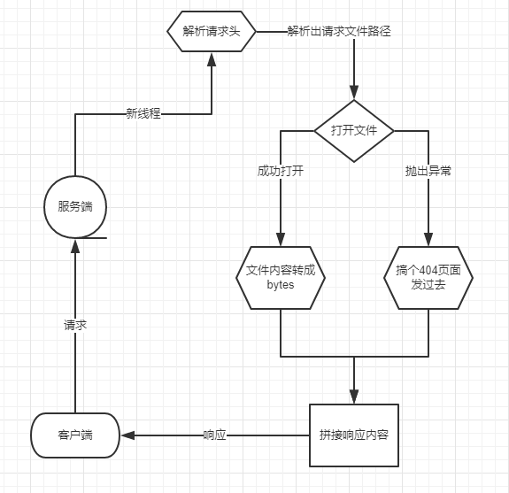

最近在造轮子，于是用Socket标准库造了一个服务器来模拟GithubPage。造轮子的过程里，遇到很多有意思的坑，由于对HTTP协议并不熟悉，作此文以记录。
抛开更底层的TCP/IP协议，只看客户端和服务端的交互。那么HTTP其实只分两个部分。
客户端的请求由三部分组成，
请求行：类似于GET / HTTP/1.1
分三个部分：
请求头：类似于HOST: blog.cathaysian.cn，一般的Web框架或者爬虫框架，都把这个部分解析成一个Map。
请求体：一般是提交数据存放的地方，当然也见过骚操作把数据放进请求头的。
服务端的响应分三部分，
状态行：类似于HTTP/1.1 200 OK
分三个部分：
响应头：类似于请求头，在封装好的框架里也是一个Map，这个里面不仅指定了响应内容的类型，是否压缩等等，也会设置cookie，session等用以标识身份的玩意。所谓的登陆，其实就是截取了这部分，在之后的请求中发送过去，让服务器知道“Who are you？”
响应体：这部分也就是服务器回复的给你的内容。譬如 HTML页面
了解了这些之后，一个模拟GithubPage的静态服务器就胸有成竹了。理论上的流程如下：

当我写完之后，本地测试好了maltose生成的页面效果，push到Github上，就坏了。
由于设计之初，我是打算前后端分离的(手动滑稽。没错，静态页面我也要搞前后端分离)。然后ajax请求的json怎么都解析不了，在对比GithubPage的响应头和我的PreviewServer响应头之后，我凭多年的爬虫经验猜出可能是Content-Type的锅。
于是改改改，果然。当ajax请求的是json，它自己就把json给解析了。而HTTP不靠URL来判断请求的资源类型，靠的是Content-Type。然后我在PreviewServer里写了一个函数来判断响应的文件类型，成功过坑。
然后就是一些奇怪的坑了，因为写PreviewServer之初，我对HTTP的了解并不系统，全靠Web框架和Requests库活着(捂脸)。看了一些人博客上写的静态文件服务器，搞错了文件不存在的异常(大约是这些博客太古老了吧)。
其次是URL的中文问题，之前玩爬虫的时候遇见过，所以很快反应过来用urllib标准库里的unquote来解析。
还有就是很奇怪的一件事，在我PreviewServer成功运行十分钟左右之后，莫名出现了一个空白请求。这个请求什么内容都没有，我修改了代码，捕捉到这个空白请求的时候，把整个请求全部打印出来，结果也只是空白。谷歌了也没有谷歌到别人提到这个问题。总之最后一个try把这个玩意忽略了。
最后，上代码！Win10上实测从无故障，抗住了每秒十余次的请求量(滑稽
xxxxxxxxxximport socketimport os.pathimport threadingimport reimport loggingimport sysimport timefrom urllib.parse import unquotelogging.basicConfig( level=logging.DEBUG, format='[%(levelname)s]-[%(asctime)s]==> %(message)s', datefmt='%Y-%m-%d %H:%M:%S',)class Main: def __init__(self, ip: str, port: int, path): self.path = path self.pattern = re.compile(r'GET (?P<file>\S+) HTTP') self.server = socket.socket(socket.AF_INET, socket.SOCK_STREAM) self.server.bind((ip, port)) self.server.listen(120) logging.info("Running in {0}:{1}".format(ip, port)) logging.info("File root directory in {0}".format(path)) def __del__(self): self.server.close() logging.info('Stopping Server.') def __set_response_file_type(self, filename): request_file_type = filename.split(".")[-1] if request_file_type == 'json': return "application/json;" elif request_file_type == 'html': return "text/html;" elif request_file_type == "xml": return "application/xml;" elif request_file_type == "js": return "application/javascript" elif request_file_type == "css": return "text/css" # TODO 增加其他类型文件的响应头 else: return None def __deal_response(self, status_code: int, header: dict, body): if status_code == 200: response_code = b"HTTP/1.1 200 OK\r\n" elif status_code == 404: response_code = b"HTTP/1.1 404 NOT Found\r\n" # TODO 增加其他状态码 response_header = b"Server: My Static Page Preview Server\r\n" for key, value in header.items(): response_header += ("{}:{}\r\n".format(key, value)).encode("UTF-8") try: # 处理body body = body.encode("UTF-8") except AttributeError: pass response = response_code + response_header + b"\r\n" + body return response def __deal_request(self, request: str): # 会出现奇怪的空白访问,啥也没有,try一下,不处理 try: # 获取请求的路径 request_file = self.pattern.match(request.splitlines()[0]).group("file") request_file = unquote(request_file) except IndexError: sys.exit() # 如果最后是/,按照GithubPage的规则,解析到index.html上 if request_file[-1] == "/": request_file += "index.html" # 切掉第一个/, 否则拼接路径会出错 return os.path.join(self.path, request_file[1:]) def __link(self, sock): request = sock.recv(1024) request = request.decode("UTF-8") request_file = self.__deal_request(request) # 打开文件,并设置响应内容 try: file = open(request_file, "rb") file_data = file.read() file.close() except FileNotFoundError: logging.warning("404 Not Found {}".format(request_file)) response = self.__deal_response(404, {"mood":"What the fuck are your request?"}, b"The file not found!") else: logging.info("Send file '{}'".format(request_file)) response_header = {"Content-Type": self.__set_response_file_type(request_file)} response = self.__deal_response(200, response_header, file_data) # +1s # 为了模拟真实的Github服务器反馈速度 time.sleep(1) sock.send(response) sock.close() def run(self): while True: sock, _ = self.server.accept() client = threading.Thread(target=self.__link, args=(sock,)) client.daemon = True client.start()if __name__ == '__main__': server = Main("0.0.0.0", 8000, "D:\\Documents") server.run()
造完这个轮子，让我有种自己写一个web框架的冲动。